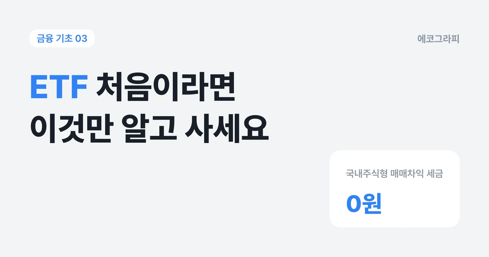
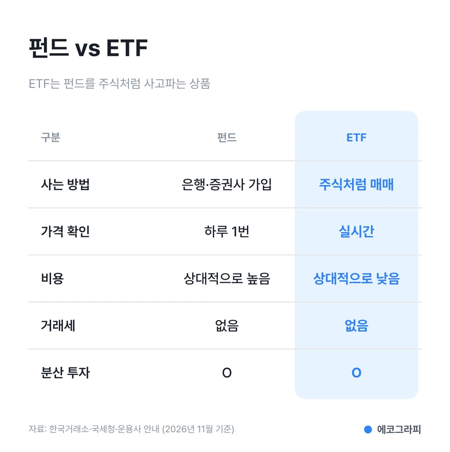
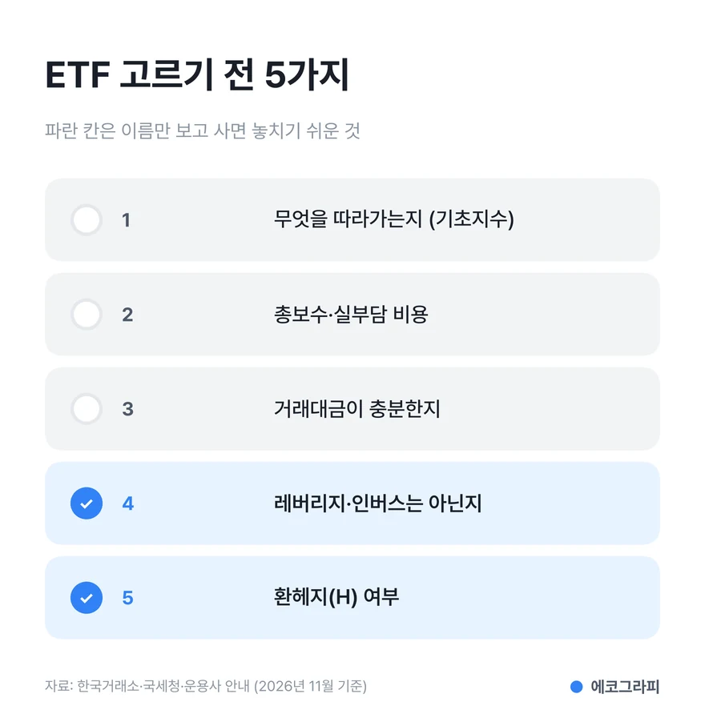
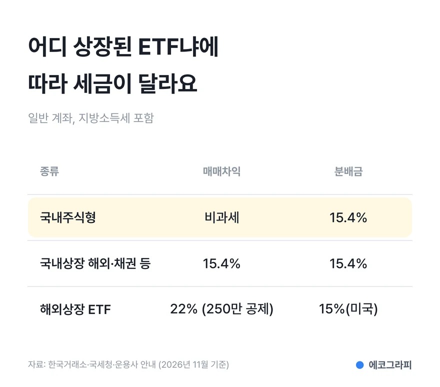
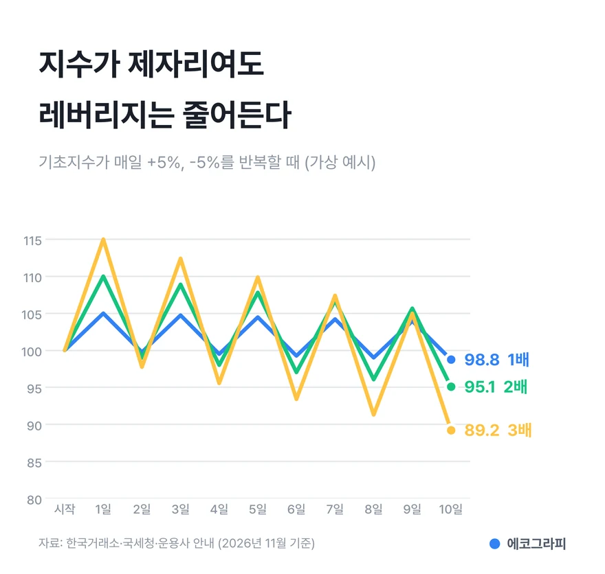

ETF(상장지수펀드)는 코스피200, S&P500 같은 지수를 따라가도록 만든 펀드를 거래소에 상장한 상품입니다. 1주만 사도 지수에 들어 있는 수백 개 종목에 나눠 투자하는 효과가 있어요.

펀드처럼 분산 투자가 되면서, 주식처럼 앱에서 실시간으로 사고팔 수 있다는 게 가장 큰 장점이에요. 팔 때 증권거래세도 붙지 않습니다.
ETF 이름에는 정보가 다 들어 있어요. 앞은 운용사 브랜드, 가운데는 투자 대상, 뒤는 특징입니다.
| 이름에 있으면 | 뜻 |
|---|---|
| KODEX·TIGER·ACE·RISE 등 | 운용사 브랜드 |
| 200·S&P500·나스닥100 | 따라가는 지수 |
| (H) | 환헤지: 환율 영향 줄임 |
| 레버리지 | 지수 하루 수익률의 2배 등 |
| 인버스 | 지수와 반대로 움직임 |
| 커버드콜 | 상승 일부 포기, 분배금 확대 |
같은 지수를 따라가는 ETF가 여러 개라면 비용이 싸고 거래가 많은 쪽이 기본적으로 유리해요.

ETF 세금은 헷갈리지만 딱 세 가지로 나뉩니다.

국내 상장 기타 ETF의 매매차익은 금융소득에 들어가요. 이자·배당과 합쳐 1년에 2,000만 원을 넘으면 다른 소득과 합산해 세금이 커질 수 있어요.
레버리지 ETF는 지수의 하루 수익률을 2배로 따라갑니다. 1년 수익률의 2배가 아니에요. 그래서 지수가 오르내리기만 반복하면 제자리여도 레버리지는 손실이 쌓입니다.

위 예시에서 지수(1배)는 10일 뒤 약 1% 빠졌지만, 2배는 약 5%, 3배는 약 11% 빠졌어요. 이걸 변동성 끌림이라고 합니다. 레버리지·인버스는 짧게 쓰는 도구라고 생각하세요.
네, '분배금'이라는 이름으로 줘요. 담고 있는 종목의 배당 등을 모아 정기적으로 나눠 줍니다.
아니요. 지수가 떨어지면 ETF 가격도 떨어져요. 예금과 다릅니다.
수익이 작으면 250만 원 공제가 있는 해외 상장이, 연금저축·ISA 같은 절세계좌에선 국내 상장이 유리한 경우가 많아요.
환율이 오를 땐 환노출이, 내릴 땐 환헤지가 유리해요. 환율을 예측하기 어렵다면 섞는 방법도 있습니다.
※ 2026년 11월 기준으로 정리한 글입니다. 세율·제도는 바뀔 수 있으니 거래 전 증권사·국세청 안내를 한 번 더 확인하세요. 특정 종목·상품의 매수·매도 권유가 아닙니다.